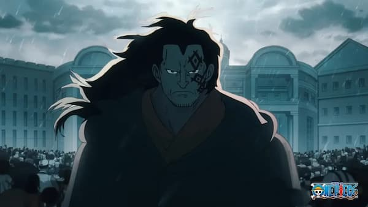

I would choose Monkey D. Dragon to be president because as the "supreme commander and founder of the Revolutionary Army (originally the Freedom Fighters)", he has a strong sense of justice, liberating oppressed nations and dismantling tyranny. He is also a complete "mastermind", running his army right under the governments nose.
Monkey D. Dragon’s top campaign platform is about bringing freedom and equality to everyone. He believes that too many people live under unfair control, and he wants to change that by standing up against corruption and injustice. Dragon’s main goal is to create a world where everyone has the same rights and chances, no matter where they come from. He plans to do this by encouraging people to speak up for themselves and work together for change. His message is that true peace can only exist when all people are free.